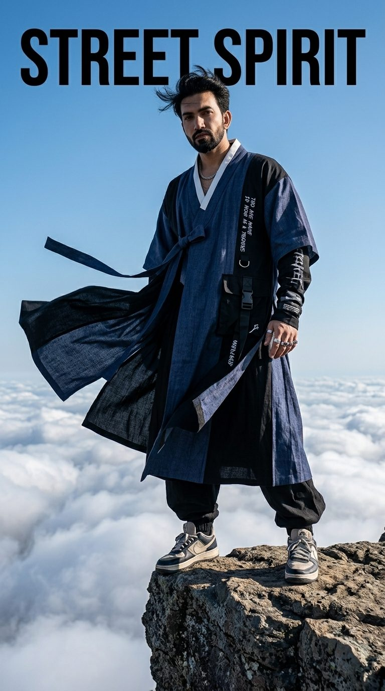
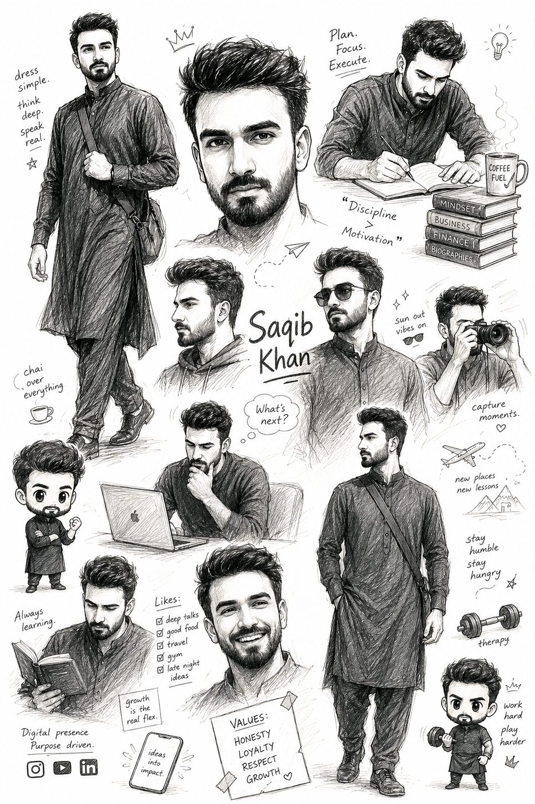
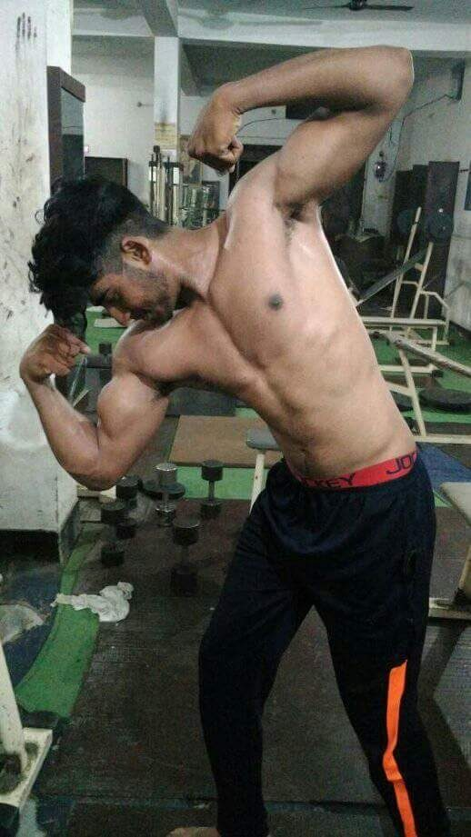
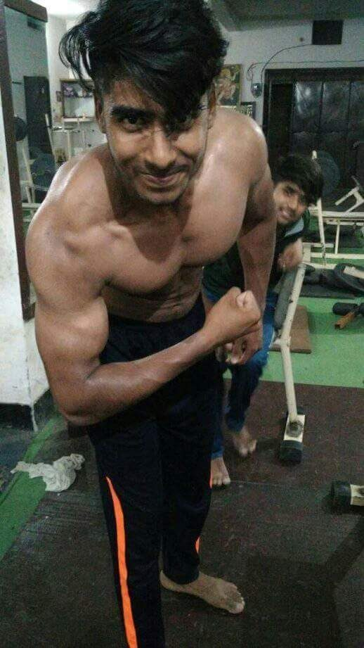
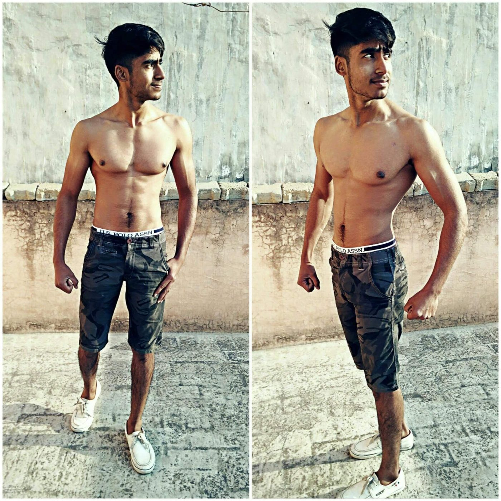
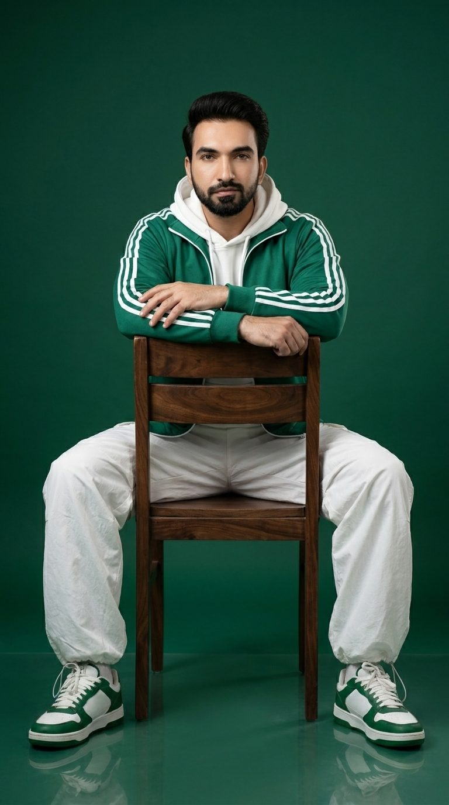
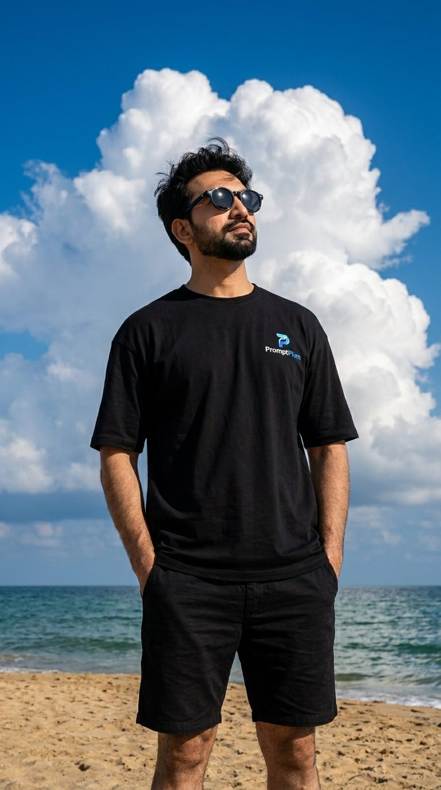

Early Life
Saqib Maqbool Khan was born on 17 May 1992 in Wah Cantt, Punjab, Pakistan. Sports run in his blood — his father, Maqbool Khan, was a runner in the Pakistan national sports team. Carrying that legacy forward, Saqib went on to win medals in three different games at the state level.
Education
- Early schooling at Saint Paul School; Classes 6–8 in Tarbela, where he secured 3rd position in the Federal Board in Class 8.
- F.Sc in Karachi, F.A in Lahore.
- DAE Diploma in Electronics (2015).
- Graphic designing course in Okara — an early hint of the visual career to come.
Career
Media Life — the defining chapter
After being crowned Mr. Attock in 2012 (bodybuilding), modeling assignments began coming his way, and Saqib stepped into the media world. From 2012 to 2016 he worked at the heart of it — with modeling agencies, modeling assignments, brand collaborations, brand photoshoots and voice design jobs. And the connection never fully broke: even after stepping back from full-time media life in 2016, he continued collaboration work with various showbiz personalities.

Business & field experience
He built experience across operations and field roles — as an incharge at a plywood warehouse in Wah Cantt, at Volta and Osaka Batteries (2016), a three-year stint at YFC, work in Kashmir and a 40-day NGO assignment in Bannu. His entrepreneurial streak showed in 2020, when he launched his refreshment shop "KHAN FOOD'S" as a side business, running it for nearly two years.
AI & digital art
With the rise of generative AI, he joined Ryven Studios (Rawalpindi) as an AI Video Generation Artist, mastering prompt engineering, generative video tools and digital post-production. Today he works independently under his own brand "XAQI arts" (#xaqiarts) — visual artist, photographer, portrait artist and AI generation artist — publishing daily AI visual prompts, art concepts and tutorials, contributing digital content to Shutterstock, and recently launching the AI-animated children's channel "Funday Rhymes" on YouTube. A small-scale WPC wall panel manufacturing venture is in the planning stages.

Sports & Fitness
- Following his father's legacy, Saqib won state-level medals in three games: Gymnastics (2009, Shipowners Government College, Karachi), Chess (2011, Lahore Sports Complex) and Swimming (2009, Sindh Sports Complex, Karachi).
- Crowned Mr. Attock in 2012 (bodybuilding).
- Regular gym training and bodybuilding; 5'10" with an athletic build — fitness has been a lifelong discipline, not a phase.



Personal Life
- Hobbies: photography, home decoration, house plants, and cooking.
- Interests: science fiction, Marvel and DC films.
- Languages: Urdu, Hindi, English, Punjabi and Siraiki; currently learning German (A1).
- Family: he has five sisters and one younger brother, and is an uncle to his niece Zainab and nephew Aahil.
- Marital status: Single.
- Values: honesty, loyalty, respect and growth — with a love for deep talks, good food, travel and the gym.


Lesser-Known Facts
- Son of a Pakistan national-team runner — sports is the family legacy.
- State-level medals in three different games.
- Mr. Attock 2012.
- Stood 3rd in the Federal Board in Class 8.
- Once ran his own food shop, "KHAN FOOD'S", for two years.
- Publishes AI art content every single day.